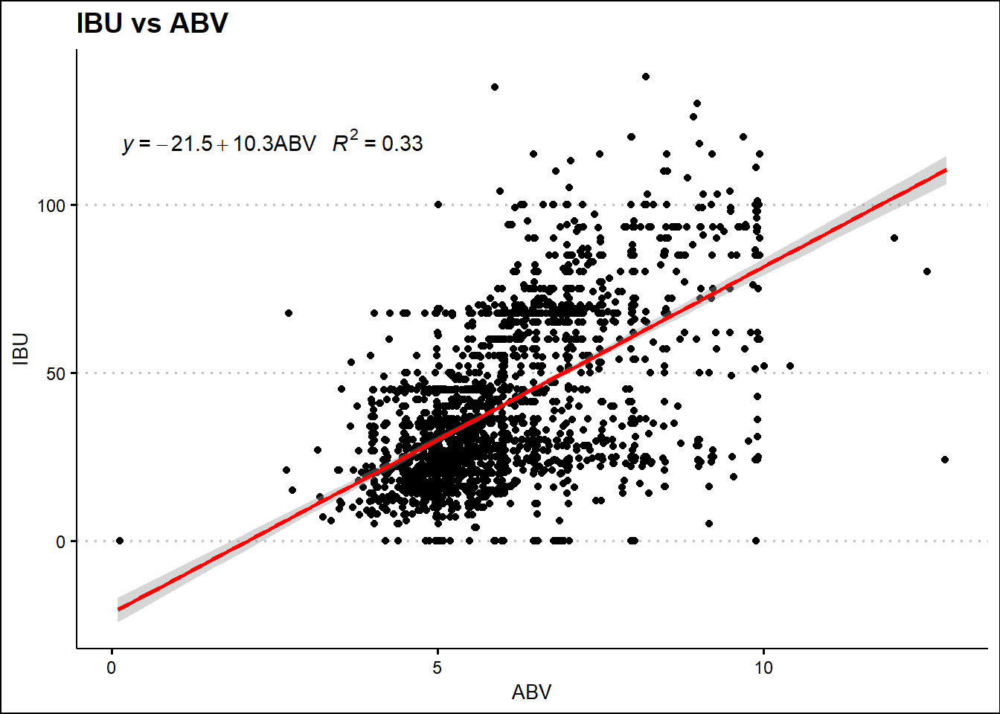

#upload beer and breweries data
beers = read.csv("C:\\Users\\tavin\\OneDrive\\Desktop\\DDS\\Project 1\\Beers.csv", header = TRUE)
breweries = read.csv("C:\\Users\\tavin\\OneDrive\\Desktop\\DDS\\Project 1\\Breweries.csv", header = TRUE)library(ggplot2)
library(ggthemes)
library(dplyr)##
## Attaching package: 'dplyr'## The following objects are masked from 'package:stats':
##
## filter, lag## The following objects are masked from 'package:base':
##
## intersect, setdiff, setequal, unionlibrary(RColorBrewer)
####This creates a custom color palette
# Classic palette BuPu, with 4 colors
coul <- brewer.pal(4, "PuOr")
# Add more colors to this palette :
coul <- colorRampPalette(coul)(51)
##Make Brewery count graph
brewerycount = data.frame(table(breweries['State']))
colnames(brewerycount) = c('State', 'BrewCount')
brewerycount## State BrewCount
## 1 AK 7
## 2 AL 3
## 3 AR 2
## 4 AZ 11
## 5 CA 39
## 6 CO 47
## 7 CT 8
## 8 DC 1
## 9 DE 2
## 10 FL 15
## 11 GA 7
## 12 HI 4
## 13 IA 5
## 14 ID 5
## 15 IL 18
## 16 IN 22
## 17 KS 3
## 18 KY 4
## 19 LA 5
## 20 MA 23
## 21 MD 7
## 22 ME 9
## 23 MI 32
## 24 MN 12
## 25 MO 9
## 26 MS 2
## 27 MT 9
## 28 NC 19
## 29 ND 1
## 30 NE 5
## 31 NH 3
## 32 NJ 3
## 33 NM 4
## 34 NV 2
## 35 NY 16
## 36 OH 15
## 37 OK 6
## 38 OR 29
## 39 PA 25
## 40 RI 5
## 41 SC 4
## 42 SD 1
## 43 TN 3
## 44 TX 28
## 45 UT 4
## 46 VA 16
## 47 VT 10
## 48 WA 23
## 49 WI 20
## 50 WV 1
## 51 WY 4brewerycount %>%
ggplot(aes(x = reorder(State, BrewCount), y = BrewCount, fill = State)) +
theme_classic() +
geom_bar(stat = "identity",fill=coul)+
coord_flip() +
theme(legend.position = "none") +
ylab("Number of Breweries") +
xlab("State") +
ggtitle("Number of Breweries in Each State") colnames(breweries)[1] = "Brewery_id"
colnames(breweries)[2] = "Brewery Name"
fullbeer <- left_join(beers, breweries, by = "Brewery_id")
head(fullbeer, n = 6)## Name Beer_ID ABV IBU Brewery_id Style Ounces
## 1 Pub Beer 1436 0.050 NA 409 American Pale Lager 12
## 2 Devil's Cup 2265 0.066 NA 178 American Pale Ale (APA) 12
## 3 Rise of the Phoenix 2264 0.071 NA 178 American IPA 12
## 4 Sinister 2263 0.090 NA 178 American Double / Imperial IPA 12
## 5 Sex and Candy 2262 0.075 NA 178 American IPA 12
## 6 Black Exodus 2261 0.077 NA 178 Oatmeal Stout 12
## Brewery Name City State
## 1 10 Barrel Brewing Company Bend OR
## 2 18th Street Brewery Gary IN
## 3 18th Street Brewery Gary IN
## 4 18th Street Brewery Gary IN
## 5 18th Street Brewery Gary IN
## 6 18th Street Brewery Gary INtail(fullbeer, n = 6)## Name Beer_ID ABV IBU Brewery_id Style Ounces
## 2405 Rocky Mountain Oyster Stout 1035 0.075 NA 425 American Stout 12
## 2406 Belgorado 928 0.067 45 425 Belgian IPA 12
## 2407 Rail Yard Ale 807 0.052 NA 425 American Amber / Red Ale 12
## 2408 B3K Black Lager 620 0.055 NA 425 Schwarzbier 12
## 2409 Silverback Pale Ale 145 0.055 40 425 American Pale Ale (APA) 12
## 2410 Rail Yard Ale (2009) 84 0.052 NA 425 American Amber / Red Ale 12
## Brewery Name City State
## 2405 Wynkoop Brewing Company Denver CO
## 2406 Wynkoop Brewing Company Denver CO
## 2407 Wynkoop Brewing Company Denver CO
## 2408 Wynkoop Brewing Company Denver CO
## 2409 Wynkoop Brewing Company Denver CO
## 2410 Wynkoop Brewing Company Denver COlibrary(tidyverse)## -- Attaching packages ------------------------------------------------------------------------- tidyverse 1.3.1 --## v tibble 3.1.3 v purrr 0.3.4
## v tidyr 1.1.4 v stringr 1.4.0
## v readr 2.0.2 v forcats 0.5.1## -- Conflicts ---------------------------------------------------------------------------- tidyverse_conflicts() --
## x dplyr::filter() masks stats::filter()
## x dplyr::lag() masks stats::lag()#Number of missing ABV values
sum(is.na(fullbeer$ABV))## [1] 62#Number of missing IBU values
sum(is.na(fullbeer$IBU))## [1] 1005fullbeer$Style = as.factor(fullbeer$Style)
styles_list<-unique(fullbeer$Style)
#Fill in missing IBU Values with mean IBU value of the style of beer
for(sty in 1:length(styles_list)){
l<-fullbeer[fullbeer$Style==styles_list[sty],]
m<-l[!(is.na(l$IBU)),]
n<-mean(m$IBU)
fullbeer$IBU[fullbeer$Style==styles_list[sty] & is.na(fullbeer$IBU)]<-n
}
#Fill in missing ABV Values with mean ABV value of the style of beer
for(sty in 1:length(styles_list)){
l<-fullbeer[fullbeer$Style==styles_list[sty],]
m<-l[!(is.na(l$ABV)),]
n<-mean(m$ABV)
fullbeer$ABV[fullbeer$Style==styles_list[sty] & is.na(fullbeer$ABV)]<-n
}
#No more missing ABV values
sum(is.na(fullbeer$ABV))## [1] 0#We still have 52 missing IBU values
sum(is.na(fullbeer$IBU))## [1] 52#We assume all mead and ciders should have an IBU of 0 as they generally do not come with an IBU value.
#The rest of the styles were looked up.
fullbeer$IBU[fullbeer$Style == "Cider"] = 0
fullbeer$IBU[fullbeer$Style == "Mead"] = 0
fullbeer$IBU[fullbeer$Style == "Rauchbier"] = 0
fullbeer$IBU[fullbeer$Style == "Shandy"] = 0
fullbeer$IBU[fullbeer$Style == "American Malt Liquor"] = 0
fullbeer$IBU[fullbeer$Style == "Kristalweizen"] = 40
fullbeer$IBU[fullbeer$Style == "Flanders Red Ale"] = 59
fullbeer$IBU[fullbeer$Style == "Braggot"] = 12
fullbeer$IBU[fullbeer$Style == "Low Alcohol Beer"] = 0
#No more missing IBU values
sum(is.na(fullbeer$IBU))## [1] 0# 5 rows are missing styles. 2527 and 1635 are actual beers. The other 3 are not specific beers so they were removed
fullbeer$Style = as.character(fullbeer$Style)
fullbeer$Style[fullbeer$Beer_ID == 2527] = "Märzen / Oktoberfest"
fullbeer$Style[fullbeer$Beer_ID == 1635] = "Scottish Ale"
fullbeer$Style = as.factor(fullbeer$Style)
#Now the two beers have a style
fullbeer[fullbeer$Beer_ID == 67,]## Name Beer_ID ABV IBU Brewery_id Style Ounces Brewery Name City State
## 1893 Modus Hoperandi 67 0.068 65 265 American IPA 12 Ska Brewing Company Durango COfullbeer[fullbeer$Beer_ID == 1635,]## Name Beer_ID ABV IBU Brewery_id Style Ounces Brewery Name
## 854 Kilt Lifter Scottish-Style Ale 1635 0.06 21 161 Scottish Ale 12 Four Peaks Brewing Company
## City State
## 854 Tempe AZfullbeer<-fullbeer[!(fullbeer$Beer_ID == 2210 | fullbeer$Beer_ID==1796|fullbeer$Beer_ID==1790),]library(dplyr)
fullbeer$State = as.factor(fullbeer$State)
medians = fullbeer %>%
group_by(State) %>%
summarise(medianABV = median(ABV), medianIBU = median(IBU))
medians$medianABV<-round(medians$medianABV*100,digits=1)
medians %>%
ggplot(aes(y = reorder(State, medianABV), x = medianABV, fill = State)) +
geom_bar(stat = "identity",fill=coul) +
theme_clean() +
theme(legend.position = "none") +
ylab("State") +
xlab("ABV (%)") +
ggtitle("Median Beer ABV in Each State")+coord_cartesian(xlim=c(3,7))medians %>%
ggplot(aes(y = reorder(State, medianIBU), x = medianIBU, fill = State)) +
geom_bar(stat = "identity",fill=coul) +
theme_clean() +
theme(legend.position = "none") +
ylab("IBU") +
xlab("State") +
ggtitle("Median Beer IBU in Each State")+coord_cartesian(xlim=c(15,70))#Highest ABV
fullbeer[which.max(fullbeer$ABV),]## Name Beer_ID ABV IBU Brewery_id Style Ounces
## 2279 Lee Hill Series Vol. 5 - Belgian Style Quadrupel Ale 2565 0.128 24 52 Quadrupel (Quad) 19.2
## Brewery Name City State
## 2279 Upslope Brewing Company Boulder CO#Most Bitter - Highest IBU
fullbeer[which.max(fullbeer$IBU),]## Name Beer_ID ABV IBU Brewery_id Style Ounces
## 148 Bitter Bitch Imperial IPA 980 0.082 138 375 American Double / Imperial IPA 12
## Brewery Name City State
## 148 Astoria Brewing Company Astoria ORsummary(fullbeer$ABV)## Min. 1st Qu. Median Mean 3rd Qu. Max.
## 0.00100 0.05000 0.05647 0.05975 0.06700 0.12800fullbeer$ABV<-round(fullbeer$ABV*100,digits=1)
fullbeer %>%
ggplot(aes(x = ABV, fill = "red"))+
geom_histogram() +
theme_clean() +
theme(legend.position = "none") +
ylab("Beer Count") +
ggtitle("Histogram of Beer ABV")+
xlab("ABV (%)")## `stat_bin()` using `bins = 30`. Pick better value with `binwidth`.fullbeer %>%
ggplot(aes(x = ABV, color = "red")) +
geom_density() +
theme_clean() +
theme(legend.position = "none") +
ggtitle("Density plot of Beer ABV")# Very right skewed distribution. Most beers are in the range of 0.04 - 0.06.library(ggpmisc)## Loading required package: ggpp##
## Attaching package: 'ggpp'## The following object is masked from 'package:ggplot2':
##
## annotatemy.formula = y ~ x
fullbeer %>%
ggplot(aes(x=ABV,y=IBU))+
geom_point(position = "jitter") +
geom_smooth(method="lm", color = "red") +
stat_poly_eq(formula = my.formula,
aes(label = paste(..eq.label.., ..rr.label.., sep = "~~~")),
parse = TRUE,
label.y = 0.87,
eq.x.rhs = "ABV") +
theme_clean() +
ggtitle("IBU vs ABV")## `geom_smooth()` using formula 'y ~ x' ### Question 8: Use KNN classification to investigate the difference between IPAs and other typles of Ales with respect to IBU and ABV.
library(class)
library(caret)## Loading required package: lattice##
## Attaching package: 'caret'## The following object is masked from 'package:purrr':
##
## lift#First we pull all the beers that are IPA's or have Ale in the name
IPAsandAles<-fullbeer[grepl("IPA|Ale",fullbeer$Style),]
#Then we split the data into 2 groups: IPA's and Ales
IPAs <- IPAsandAles[grepl("IPA|India Pale Ale", IPAsandAles$Style),]
Ales <- IPAsandAles[!grepl("IPA|India Pale Ale", IPAsandAles$Style),]
#Create a new column to identify each beer as IPA or Ale and then re-combine datasets
IPAs$Class = "IPA"
Ales$Class = "Ale"
IPAsandAles <- rbind(IPAs, Ales)
#Create new data frame from IPAsandAles that only includes IBU, ABV, and Class information.
IPAAle <- data.frame(ABV = IPAsandAles$ABV,
IBU = IPAsandAles$IBU,
ZABV = scale(IPAsandAles$ABV),
ZIBU = scale(IPAsandAles$IBU),
Class = IPAsandAles$Class)
#We are first splitting our data into a training set and a validation set.
#Train 80% validate 20%
set.seed(1)
trainIndices = sample(1:dim(IPAAle)[1],round(.8* dim(IPAAle)[1]))
train = IPAAle[trainIndices,]
validate = IPAAle[-trainIndices,]
#To tune the hyperparameters, we did a cross validation and a for loop using train/test splits.
iterations = 500
numks = 30
masterAcc = matrix(nrow = 1, ncol = numks)
masterSens = matrix(nrow = 1, ncol = numks)
masterSpec = matrix(nrow = 1, ncol = numks)
for(i in 1:numks)
{
classifications = knn.cv(train[,c(3,4)],train$Class, prob = TRUE, k = i)
table(classifications,train$Class)
CM = confusionMatrix(table(classifications,train$Class))
masterAcc[1,i] = CM$overall[1]
masterSens[1,i]=CM$byClass[1]
masterSpec[1,i]=CM$byClass[2]
}
MeanAcc = colMeans(masterAcc)
MeanSens=colMeans(masterSens)
MeanSpec = colMeans(masterSpec)
#Make plots to see the effect of K
par(mfrow=c(1,3))
CVAcc = data.frame(K = seq(1,numks,1), MeanAcc = MeanAcc)
CVAcc %>%
ggplot(aes(K, MeanAcc)) +
geom_point() +
geom_line() +
theme_clean() +
ylab("Accuracy")+
ggtitle("Effect of K on Accuracy (CV)")CVSens = data.frame(K = seq(1,numks,1), MeanSens = MeanSens)
CVSens %>%
ggplot(aes(K, MeanSens)) +
geom_point() +
geom_line() +
theme_clean() +
ylab("Sensitivity")+
ggtitle("Effect of K on Sensitivity (CV)")CVSpec = data.frame(K = seq(1,numks,1), MeanSpec = MeanSpec)
CVSpec %>%
ggplot(aes(K, MeanSpec)) +
geom_point() +
geom_line() +
theme_clean() +
ylab("Specificity")+
ggtitle("Effect of K on Specificity (CV)")# This for loop creates 500 iterations of train/test splits (from the training data) to tune k
iterations = 500
numks = 30
masterAcc = matrix(nrow = iterations, ncol = numks)
masterSens = matrix(nrow = iterations, ncol = numks)
masterSpec = matrix(nrow = iterations, ncol = numks)
splitPerc=.75
for(j in 1:iterations)
{
trainIndices = sample(1:dim(train)[1],round(splitPerc * dim(train)[1]))
train1 = train[trainIndices,]
test1 = train[-trainIndices,]
for(i in 1:numks)
{
classifications = knn(train1[,c(3,4)],test1[,c(3,4)],train1$Class, prob = TRUE, k = i)
CM = confusionMatrix(table(classifications,test1$Class))
masterAcc[j,i] = CM$overall[1]
masterSens[j,i] = CM$byClass[1]
masterSpec[j,i] = CM$byClass[2]
}
}
MeanAcc = colMeans(masterAcc)
MeanSens = colMeans(masterSens)
MeanSpec = colMeans(masterSpec)
kAcc = data.frame(K = seq(1,numks,1), Accuracy = MeanAcc)
kAcc %>%
ggplot(aes(K, Accuracy)) +
geom_point() +
geom_line() +
theme_clean() +
ylab("Accuracy")+
ggtitle("Effect of K on Accuracy (Train/Test Split)")kSens = data.frame(K = seq(1,numks,1), Sensitivity = MeanSens)
kSens %>%
ggplot(aes(K, Sensitivity)) +
geom_point() +
geom_line() +
theme_clean() +
ylab("Sensitivity")+
ggtitle("Effect of K on Sensitivity (Train/Test Split)")kSpec = data.frame(K = seq(1,numks,1), Specificity = MeanSpec)
kSpec %>%
ggplot(aes(K, MeanSpec)) +
geom_point() +
geom_line() +
theme_clean() +
ylab("Specificity")+
ggtitle("Effect of K on Specificity (Train/Test Split)")#We settled on k=25 as it balanced Accuracy, Sensitivity and Specificity the best.
classifications = knn(train[,c(3,4)],validate[,c(3,4)],train$Class, prob = TRUE, k = 19)
CM = confusionMatrix(table(classifications,validate$Class))
confusionMatrix(table(classifications,validate$Class))## Confusion Matrix and Statistics
##
##
## classifications Ale IPA
## Ale 188 23
## IPA 18 78
##
## Accuracy : 0.8664
## 95% CI : (0.8232, 0.9024)
## No Information Rate : 0.671
## P-Value [Acc > NIR] : 3.226e-15
##
## Kappa : 0.6937
##
## Mcnemar's Test P-Value : 0.5322
##
## Sensitivity : 0.9126
## Specificity : 0.7723
## Pos Pred Value : 0.8910
## Neg Pred Value : 0.8125
## Prevalence : 0.6710
## Detection Rate : 0.6124
## Detection Prevalence : 0.6873
## Balanced Accuracy : 0.8424
##
## 'Positive' Class : Ale
## ###Exploring a Naive Bayes model
##Naive Bayes Exploration
library(e1071)
model = naiveBayes(Class~ABV+IBU,data = train)
confusionMatrix(table(predict(model,validate[,c(1,2)]),as.factor(validate$Class)))## Confusion Matrix and Statistics
##
##
## Ale IPA
## Ale 186 20
## IPA 20 81
##
## Accuracy : 0.8697
## 95% CI : (0.8268, 0.9053)
## No Information Rate : 0.671
## P-Value [Acc > NIR] : 9.98e-16
##
## Kappa : 0.7049
##
## Mcnemar's Test P-Value : 1
##
## Sensitivity : 0.9029
## Specificity : 0.8020
## Pos Pred Value : 0.9029
## Neg Pred Value : 0.8020
## Prevalence : 0.6710
## Detection Rate : 0.6059
## Detection Prevalence : 0.6710
## Balanced Accuracy : 0.8524
##
## 'Positive' Class : Ale
## ###Other Useful Inference: Most and Least numerous type of beer by State
count_by_state<-fullbeer%>%group_by(State)%>%count(Style)
max_counts_by_State<-count_by_state%>%group_by(State)%>%summarize(n=max(n))
style_by_state<-left_join(max_counts_by_State,count_by_state,by=c("State","n"))
style_by_state$Style = as.factor(style_by_state$Style)
summary(style_by_state)## State n Style
## DC : 8 Min. : 1.000 American IPA :39
## SD : 7 1st Qu.: 1.000 American Pale Ale (APA) :19
## AR : 5 Median : 3.000 American Blonde Ale : 6
## IA : 5 Mean : 6.031 American Amber / Red Ale : 4
## CT : 3 3rd Qu.: 6.000 American Brown Ale : 3
## GA : 3 Max. :45.000 American Double / Imperial IPA: 3
## (Other):65 (Other) :22most_popular_styles =
style_by_state %>%
group_by(Style) %>%
summarise(n = n())
most_popular_styles %>%
ggplot(aes(x = reorder(Style, n), y = n, fill = Style)) +
geom_bar(stat = "identity") +
theme_clean() +
coord_flip() +
theme(legend.position = "none") +
ylab("Frequency of most numerous beers in each state") +
xlab("Style") +
ggtitle("Most numerous beers in Each State")IPAState = count_by_state%>%group_by(State)%>%filter(Style == "American IPA")
IPAState %>%
ggplot(aes(x = reorder(State, n), y = n, fill = State)) +
geom_bar(stat = "identity") +
theme_clean() +
coord_flip() +
theme(legend.position = "none") +
ylab("Number of American IPA's") +
xlab("State") +
ggtitle("Number of American IPA's in each state")#We could make the conclusion that IPA's could be introduced into those markets that don't have many IPA's as that is the most popular class of beers in the states.
max_style_by_state = style_by_state %>% group_by(State) %>% summarize(n= max(n))
summary(as.factor(style_by_state$Style))## Abbey Single Ale Altbier
## 0 0 0
## American Adjunct Lager American Amber / Red Ale American Amber / Red Lager
## 1 4 1
## American Barleywine American Black Ale American Blonde Ale
## 0 1 6
## American Brown Ale American Dark Wheat Ale American Double / Imperial IPA
## 3 0 3
## American Double / Imperial Pilsner American Double / Imperial Stout American India Pale Lager
## 0 0 0
## American IPA American Malt Liquor American Pale Ale (APA)
## 39 0 19
## American Pale Lager American Pale Wheat Ale American Pilsner
## 0 2 1
## American Porter American Stout American Strong Ale
## 3 0 0
## American White IPA American Wild Ale Baltic Porter
## 0 0 0
## Belgian Dark Ale Belgian IPA Belgian Pale Ale
## 0 0 1
## Belgian Strong Dark Ale Belgian Strong Pale Ale Berliner Weissbier
## 0 0 1
## Bière de Garde Bock Braggot
## 0 0 0
## California Common / Steam Beer Chile Beer Cider
## 0 0 0
## Cream Ale Czech Pilsener Doppelbock
## 1 0 0
## Dortmunder / Export Lager Dubbel Dunkelweizen
## 0 0 0
## English Barleywine English Bitter English Brown Ale
## 0 0 0
## English Dark Mild Ale English India Pale Ale (IPA) English Pale Ale
## 0 0 0
## English Pale Mild Ale English Stout English Strong Ale
## 0 0 0
## Euro Dark Lager Euro Pale Lager Extra Special / Strong Bitter (ESB)
## 0 0 1
## Flanders Oud Bruin Flanders Red Ale Foreign / Export Stout
## 0 0 0
## Fruit / Vegetable Beer German Pilsener Gose
## 0 0 0
## Grisette Hefeweizen Herbed / Spiced Beer
## 0 1 1
## Irish Dry Stout Irish Red Ale Kölsch
## 0 1 0
## Keller Bier / Zwickel Bier Kristalweizen Light Lager
## 0 0 0
## Low Alcohol Beer Märzen / Oktoberfest Maibock / Helles Bock
## 0 1 0
## Mead Milk / Sweet Stout Munich Dunkel Lager
## 0 0 0
## Munich Helles Lager Oatmeal Stout Old Ale
## 0 1 0
## Other Pumpkin Ale Quadrupel (Quad)
## 0 0 0
## Radler Rauchbier Roggenbier
## 0 0 0
## Russian Imperial Stout Rye Beer Saison / Farmhouse Ale
## 0 0 0
## Schwarzbier Scotch Ale / Wee Heavy Scottish Ale
## 1 1 1
## Shandy Smoked Beer Tripel
## 0 0 0
## Vienna Lager Wheat Ale Winter Warmer
## 0 0 0
## Witbier
## 1